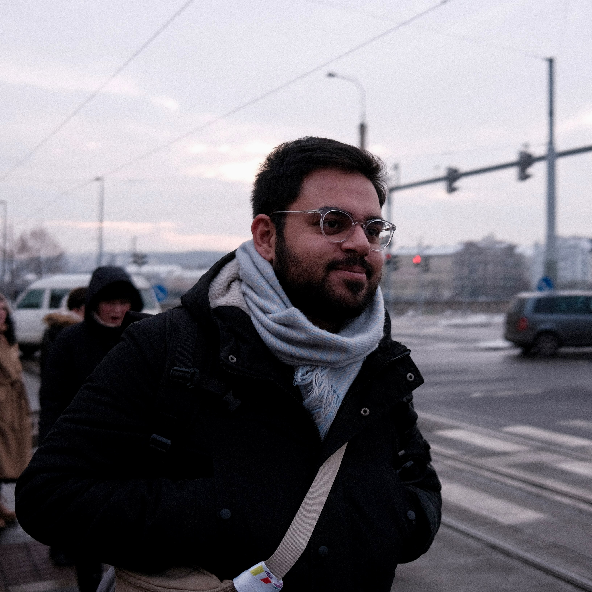

Dixit Sabharwal
Junior Software Engineer
Full-Stack Web Development
I am a full-stack web developer, seeking to stay up-to-date with the latest developments in the field, including languages, frameworks, and deployment environments. Dedicated to building reliable, practical, and scalable systems, and am learning and improving my knowledge to achieve this. I am particularly interested in working on projects or in companies that endorse open source projects or work in the public sector, as I believe in the value of making technology accessible to everyone.
Skills
Work
Software Development Engineer Intern @ AWS - Amazon
August 2020 - February 2023 Berlin, Germany- Built a management console to empower ongoing migration of service to a new data model and store.
- Console is a web-based UI to view and search through data, also compare between old and new versions, and trigger different tasks in the migration pipeline.
- Used React and TypeScript for the website UI. Used the AWS serverless stack (Lambda, API Gateway, DynamoDB) for the backend. Managed infrastructure in AWS CDK.
Teaching Assistant @ Faculty of EEMCS, TU Delft
September 2019 - June 2021 Delft, NetherlandsTeaching Assistant for > 10 different courses from the Computer Science program. Main tasks were to help students through personalised and group assistance, and supervise teams in project work.
Web Developer @ Dizconto Ltd.
April 2020 - July 2020 Den Haag, Netherlands- Built a management console frontend for Dizconto, which provided social media marketing integrations.
- Planned website development, converted mockups into usable web presence with TypeScript, React and NodeJS.
- Also worked on implementing a development and deployment (CI/CD) pipeline using Terraform and AWS.
Study
M.Sc. Computer Science @ École polytechnique fédérale de Lausanne
September 2021 - ongoingCurrently one year into the program following courses on software security and privacy, compilers, and data management and analysis.
B.Sc. Computer Science and Engineering @ Technische Universiteit Delft
September 2018 - June 2021- Graduated cum laude with a GPA of 8.8.
- Thesis on "Formal verification of functional programs in Haskell and Agda".
- Minor in Quantum Science and Information.
- Main topics studied; OOP & FP, Algorithms, Database systems, Software Engineering.